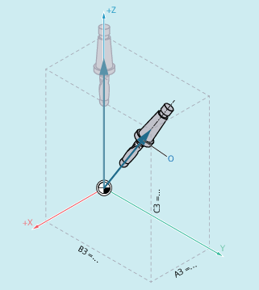

5-axis programs are usually generated by CAD/CAM systems and not entered at the control. So the following explanations are directed mainly at programmers of postprocessors.
The following commands are available for orientation programming:
Command | Meaning |
|---|---|
| Euler angle with rotation sequence ZX'Z'' |
| RPY angle with rotation sequence XY'Z'' |
| RPY angle with rotation sequence ZY'X'' |
| Virtual orientation axes with freely definable rotation sequence via: MD21120 $MC_ORIAX_TURN_TAB_1 |
| Virtual orientation axes with freely definable rotation sequence via: MD21130 $MC_ORIAX_TURN_TAB_2 |
| Virtual orientation axes with rotary axis positions |
| Note |
The machine manufacturer can use machine data to define various variants. Please refer to the machine manufacturer's instructions. |
The values programmed during ORIEULER orientation programming with A2, B2, C2 are interpreted as Euler angles (in degrees).
The new orientation vector results from the following three rotations of the original orientation vector:
with the rotary axis A2 about the coordinate axis Z
with the rotary axis B2 about the new coordinate axis X'
with the rotary axis C2 about the coordinate axis Z"
In this case the value of C2 (rotation around the new Z axis) is meaningless and does not have to be programmed.
The values programmed during ORIEULER orientation programming with A2, B2, C2 are interpreted as RPY angles (in degrees) with the rotation sequence X Y' Z''.
| Note |
In contrast to programming with ORIEULER, with ORIRPY all three values here have an effect on the orientation vector. |
The new orientation vector results from the following three rotations of the original orientation vector:
with the rotary axis A2 about the coordinate axis X
with the rotary axis B2 about the new coordinate axis Y'
with the rotary axis C2 about the coordinate axis Z"
The components of the direction vector are programmed with A3, B3, C3. The vector points towards the tool adapter; the length of the vector is of no significance.
Vector components that have not been programmed are set equal to zero.
X, Y, Z | Coordinate axes of the WCS |
A3, B3, C3 | Components of the directional vector |
O | Orientation vector |
Programming the directional vector
The resultant tool orientation is determined from:
Path tangent
Surface normal vector
At the start of the block A4, B4, C4 and at the end of the block A5, B5, C5
Lead angle LEAD
Angle in the plane defined by the path tangent and surface normal vector
Tilt angle TILT at end of block
Angle in the plane, perpendicular to the path tangent relative to the surface normal vector
T | Path tangent |
S | Perpendicular to path tangent |
N | Surface normal |
B | Path |
TCP | Tool Center Point |
O | Orientation vector |
Programming of LEAD TILT
| Note |
Behavior at inside corners with 3D tool offsetIf the block is shortened at an inside corner, the programmed tool orientation is still taken over at the end of the block. |